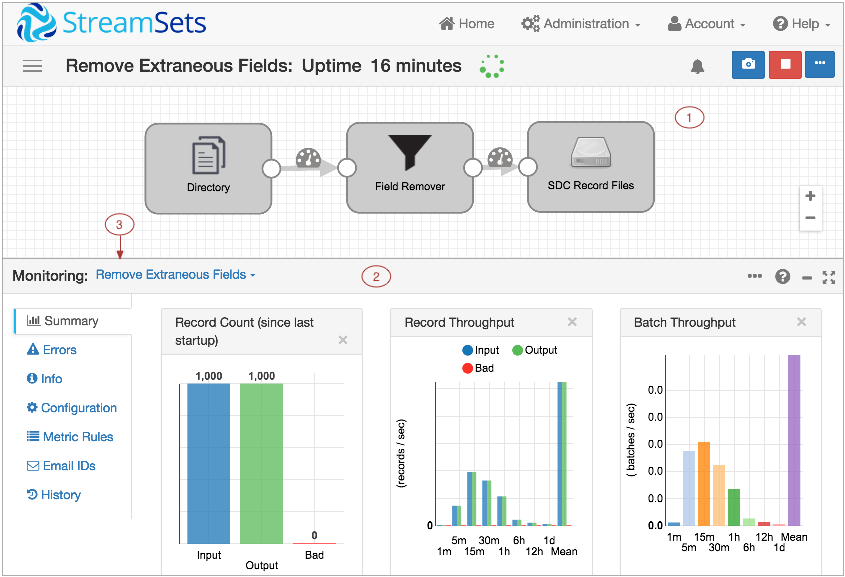

Pipeline Monitoring
When the Data Collector runs a pipeline, you can view real-time statistics about the pipeline, examine a sampling of the data being processed, and create rules and alerts.
When you access the Data
Collector console as
the Data
Collector runs
a pipeline, the console displays the pipeline in Monitor mode. In Monitor mode, you can
perform the following tasks:
- View how a snapshot of data moves through the pipeline
- View statistics for the pipeline and stages in the pipeline
- Create metric alerts based on pipeline and stage statistics
- Create data rules that can generate graphs and alerts based on a sampling of data passing between stages
- Define the email addresses to receive email alerts
- View the pipeline history.
Data Collector Console - Monitor Mode
In Monitor mode, you can use the Data Collector console to view data as it passes through the pipeline.
The following image shows the Data Collector console in Monitor mode:

| Area / Icon | Name | Description |
|---|---|---|
| 1 | Pipeline canvas | Displays the pipeline that the Data Collector is running. You can click a stage to view statistics about the stage. Click an empty part of the canvas to view pipeline statistics. |
| 2 | Monitor Panel | Displays statistics for the pipeline or selected stage. Can display information about
the pipeline or configuration details. When you |
| 3 | Pipeline-Stage list | Lists the pipeline and stages in the pipeline. Use to select the information that you want to view. |
| Monitoring Stream | Select to create a data rule or alert. | |
| Inspect Data icon | Indicates when alerts are configured on the stream:
|
|
| Snapshot icon | Captures a snapshot of data passing through the pipeline so you can review the data, like data preview. | |
| Stop icon | Stops the pipeline. | |
| Alert icon | Indicates a data alert has been triggered. |